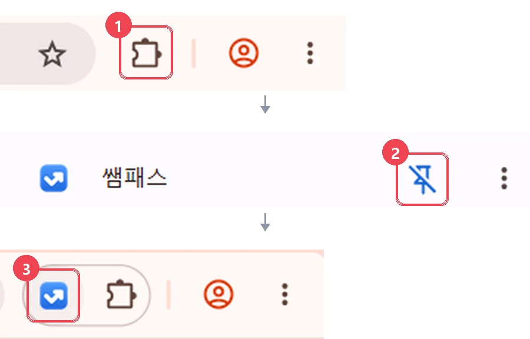
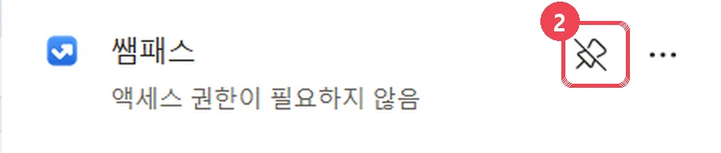
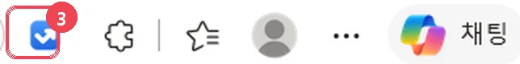

1분이면 끝,
업데이트는 자동
스토어에서 받기 → 툴바에 고정 → 비밀번호·PIN 저장. 엣지는 엣지 확장 스토어, 크롬은 크롬 웹 스토어에서 받아요. 설치 파일도, 관리자 권한도 필요 없어요. 새 버전은 스토어가 알아서 설치해요.
예전 설치 파일판은 더 이상 새 버전을 받지 않아요. 아래 '예전에 설치 파일로 설치했어요'를 보고 스토어판으로 옮겨 주세요. 그 뒤로는 업데이트가 자동이에요.
1스토어에서 받기
아래 버튼이 지금 쓰는 브라우저에 맞는 스토어를 열어요. 쌤패스 스토어 페이지에서 엣지는 [받기], 크롬은 [Chrome에 추가]를 눌러요.
엣지 스토어에서 쌤패스 열기2"확장 추가" 누르기
[받기]·[Chrome에 추가]를 누르면 브라우저가 쌤패스를 추가할지 묻는 작은 창을 띄워요. [확장 추가]를 누르면 설치가 끝나요.
3툴바에 고정
주소창 오른쪽, 즐겨찾기(☆) 바로 왼쪽의 확장 아이콘을 눌러요. 목록에서 쌤패스 줄 오른쪽의 핀(압정) 아이콘을 누르면 툴바에 쌤패스 아이콘이 늘 보여요.
주소창 오른쪽의 퍼즐 모양(확장 프로그램) 아이콘을 눌러요. 목록에서 쌤패스 줄 오른쪽의 핀(압정) 아이콘을 누르면 툴바에 쌤패스 아이콘이 늘 보여요.

 확장 아이콘즐겨찾기(☆) 아이콘 바로 왼쪽, 꽃잎처럼 둥근 조각 모양 ①
확장 아이콘즐겨찾기(☆) 아이콘 바로 왼쪽, 꽃잎처럼 둥근 조각 모양 ①

쌤패스 옆 핀 아이콘눌러서 툴바에 고정 ② — 고정되면 핀에 빗금이 생겨요(다시 누르면 고정 풀기)
툴바에 쌤패스 아이콘③ 누르면 쌤패스 팝업이 열려요4비밀번호 · PIN 저장
- 쌤패스 아이콘 → 오른쪽 위 [설정] → 비밀번호·잠금 (처음 받으면 설정의 시작 안내가 저절로 열려요. 그 순서대로 따라 해도 돼요)
- 인증서 비밀번호를 두 번, PIN(숫자 6~12자리)을 두 번 넣고 [저장]. PIN은 길게 정할수록 안전해요.
- 툴바 아이콘에서 PIN으로 잠금을 풀면 준비 끝!
○○.eduptl.kr)를 바꿔 주세요.?안 될 때
스토어 페이지에 [받기]가 없거나 다른 브라우저라고 나와요
지금 브라우저와 다른 스토어를 연 거예요(크롬에서 엣지 스토어, 또는 그 반대). 1단계 버튼 아래 작은 링크에서 지금 브라우저에 맞는 스토어를 골라 주세요.
[받기]가 회색이거나 "관리자가 차단함"이 떠요
학교에서 브라우저 확장 설치를 관리하는 PC일 수 있어요. 정보(전산) 담당 선생님께 문의해 주세요.
새 버전이 나왔다는데 그대로예요
브라우저가 몇 시간마다 스스로 확인해서 바꿔요. 바로 받고 싶으면 주소창에 edge://extensions(크롬은 chrome://extensions) → 개발자 모드를 켜고 위쪽의 [업데이트]를 누르세요. 새 버전은 스토어 심사를 거친 뒤에 나와서, 업데이트 기록에 올라온 뒤 며칠 걸릴 수 있어요.
예전에 설치 파일로 설치했어요
- Win+R →
%LOCALAPPDATA%\NeisHelper\NeisHelperSetup.exe /uninstall→ Enter edge://extensions(크롬은chrome://extensions)에서 예전 쌤패스 [제거]- 위 1단계부터 스토어판을 설치하고, 인증서 비밀번호와 PIN을 다시 저장해요. (스토어판은 다른 확장이라 예전 설정을 가져오지 못해요)
지우고 싶어요
툴바의 쌤패스 아이콘을 마우스 오른쪽 버튼으로 눌러 [Microsoft Edge에서 제거](크롬은 [Chrome에서 삭제]). 저장한 비밀번호와 설정도 함께 지워져요.